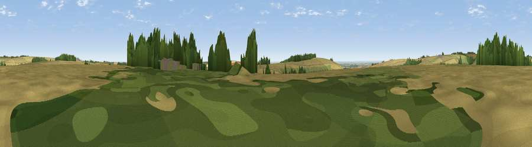

Viewpoint near Millington
#28438 in England · top 69% of its area beats it · near MillingtonThe view, rendered

A 360° render of this exact spot computed from the terrain model, tree cover and land cover — summer colours, afternoon light, calibrated against photographs of famous viewpoints. Real trees, hedges and buildings will differ in detail.
The panorama
Grey silhouette: terrain skyline in each direction (720 bearings, Earth curvature and refraction included). Dashed green: skyline with trees (+15 m) and buildings (+8 m) as obstacles. Blue strip: how far the ground is visible on each bearing.
Where the view opens
Wedge length = distance to the farthest visible ground on that bearing (vegetation-aware). Rings at 10, 25 and 50 km.
What fills the view
73% cropland · 18% grassland · 8% woodland · 2% built-up
Angular shares of the visible panorama (visual magnitude), not map area. Landscape diversity 0.35 (0–1 Shannon).
Key numbers
More beautiful places nearby
The staircase of upgrades: each row has a higher view potential than everything closer. Driving times are estimates from straight-line distance, calibrated against real road routing — check an actual route before setting out.
| Place | Direction | Drive | Score |
|---|---|---|---|
| Viewpoint near Huggate | NNE · 2 km | ~6 min | 51.0 |
| Viewpoint near Millington | SW · 3 km | ~8 min | 67.2 |
| Viewpoint near Millington | W · 4 km | ~9 min | 69.7 |
| Viewpoint near Bishop Wilton | WNW · 5 km | ~11 min | 71.5 |
| Garrowby Hill (A166 crest) | WNW · 6 km | ~13 min | 71.9 |
| Viewpoint near Acklam | NW · 9 km | ~18 min | 73.8 |
| Beacon Hill | NE · 36 km | ~54 min | 79.1 |
| Viewpoint near Speeton | NE · 36 km | ~55 min | 80.0 |
53.96896, -0.70001 · source: screening · position refined by local search. Computed location — check access rights before visiting.